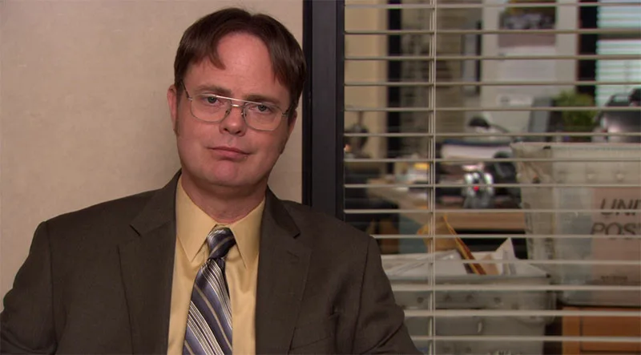

| Фото | Имя персонажа | Описание |
|---|---|---|
| Майкл Скотт | Майкл Скотт — директор филиала Dunder Mifflin в Скрантоне. Известен своей эксцентричностью и странным чувством юмора. | |
|  | Дуайт Шрут | Дуайт Шрут — неофициальный помощник директора, который предан работе и стремится занять место Майкла. |
| Джим Халперт | Джим Халперт — продавец, известный своими розыгрышами Дуайта. Влюблен в Пэм. | |
| Пэм Бизли | Пэм Бизли — секретарь, которая мечтает стать художницей. Развивает отношения с Джимом на протяжении сериала. |